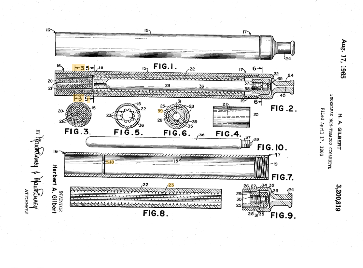

Como surgiu?
Trajetória 1963 - 2022
A utilização de um conceito de “cigarro elétrico” é datada de 1960, nos Estados Unidos. O primeiro aparelho
eletrônico foi desenvolvido e patenteado em 1963, por Herbert Gilbert. A invenção não chegou a
ser comercializada porque faltava tecnologia na época.

Imagem fonte Blog Juices br
Somente em 2003 que começou a ser desenvolvido
os cigarros eletrônicos pelo farmacêutico Hon Lik, após perder seu pai por um câncer de pulmão consequência
do fumo. Ele procurava um método menos nocivo à saúde para inalar nicotina pois o mesmo era fumante desde
os 18 anos e estava fumando uma maço de cigarro tradicional por dia.
Após a invenção de Hon Lik, outras empresas desenvolveram seus próprios cigarros eletrônicos
aproveitando a crescente demanda deste produto. Segundo Scholz JR, Abe TO (2019) a popularidade
dos cigarros eletrônicos entre os adolescentes nos anos de 2011 a 2018, houve um aumento de 13
vezes no consumo, passando de 1,5% para 20,8%.
A ideia inicial da criação do cigarro eletrônico foi para que fumantes substituíssem os cigarros
tradicionais, que contém mais de 4,7 mil substâncias tóxicas, por um dispositivo menos agressivo. Porém,
algo que era pra ser uma substituição acabou sendo mais um objeto de consumo. Os usuários começaram a
utilizar o cigarro tradicional junto com os cigarros eletrônicos o que agravou drasticamente a situação.
Desta forma, os cigarros eletrônicos acabaram virando uma “moda” entre jovens, e o tabagismo passou a
transmitir modernidade.
Em consequência deste aumento excessivo de usuários, principalmente os jovens, em 2009 a comercialização,
importação e propaganda de cigarros eletrônicos foram proibidas no Brasil pela Agência Nacional de
Vigilância Sanitária (Brasil 2009 – RDC 46, de 28/08/09). Pois não existem estudos que comprovem a
segurança na utilização dos cigarros eletrônicos. A restrição começou em 2009, mas a comercialização
continua ocorrendo de forma ilegal no país. A decisão foi tomada durante a 10ª reunião da diretoria
colegiada do órgão. Por unanimidade, a diretoria seguiu voto proferido pela diretora Cristiane Rose
Jourdan. Segundo a diretora, estudos científicos demonstram que o uso dos dispositivos eletrônicos
para fumar (DEFs) está relacionado com aumento do risco de jovens ao tabagismo, potencial de dependência
e diversos danos à saúde pulmonar, cardiovascular e neurológica.
.jpg)
Quando foram criados, esses produtos passaram por diversas gerações: os dispositivos descartáveis
(de uso único), os dispositivos recarregáveis com refis líquidos (que contém em sua maioria propileno
glicol, glicerina, nicotina e flavorizantes) em sistema aberto ou fechado; os produtos de tabaco
aquecido, que possuem um dispositivo eletrônico onde se acopla um refil com tabaco. O sistema "pods",
que contém sais de nicotina e outras substâncias diluídas em líquido e se assemelham a pen drives,
dentre outros.
Teve alguns estudos epidemiológicos recentes , e já se pode mencionar que o cigarro eletrônico causa
danos à saúde devido os componentes do tabaco do cigarro tradicional que estão presentes nesses
dispositivos. Entretanto, os cigarros tradicionais e os eletrônicos possuem muitas diferenças.
No cigarro eletrônico não existe a combustão dos derivados do tabaco, como ocorre com o cigarro
tradicional, os dispositivos eletrônicos não possuem monóxido de carbono. Além disso, ele também não
contém alcatrão na composição.
“E há certas coisas que não tinham no cigarro convencional (taxa de formaldeído mais alta) que há no
cigarro eletrônico, e que sabemos que faz mal”, diz Paulo Corrêa, pneumologista e coordenador da Comissão
Científica de Tabagismo da Sociedade Brasileira de Pneumologia e Tisiologia (SBPT).
No Brasil houve o caso médico do cantor sertanejo Zé Neto, ele foi diagnosticado com um quadro de “foco de vidro” no pulmão (trata-se de uma
alteração que aparece no exame de tomografia computadorizada e pode indicar várias doenças ) causado pelo uso de cigarros eletrônicos
(Revista VEJA São Paulo, 2021). Teve alguns estudos epidemiológicos recentes , e já se pode mencionar que o cigarro eletrônico causa danos
à saúde devido os componentes do tabaco do cigarro tradicional que estão presentes nesses dispositivos.
Existem poucos estudos sobre as doenças causadas pelo uso dos aparelhos, no entanto, alguns sinais e sintomas foram identificados como relacionados
ao uso de cigarros eletrônicos. Um espectro de alterações clínicas-fisiopatológicas na doença pulmonar, incluindo pneumonite eosinofílica aguda,
pneumonite de hipersensibilidade e hemorragia alveolar difusa. Mais recentemente, pesquisas mostraram uma relação mais próxima com o uso de cigarros
eletrônicos e designaram uma nova doença chamada EVALI com características diagnósticas específicas. Os sintomas de EVALI incluem falta de ar, dor,
tosse e hemoptise. Sintomas gastrointestinais como náuseas, vômitos e dor abdominal, bem como sintomas como febre e mal-estar, também são comuns.
Os pacientes geralmente apresentam taquicardia, falta de ar, febre e hipoxemia. Estudos anteriores também documentaram efeitos fisiológicos
adversos diretos semelhantes ao tabagismo convencional, incluindo aumento da resistência ao fluxo de ar e diminuição do óxido nítrico
(WINNICKA; SHENOY,2020).
A estruturação do cartucho sofre oscilações, dependendo de cada tipo de fabricante. Em geral, são constituídos de nicotina é um
componente específico para que se possa produzir o aerossol (como por exemplo: propilenoglicol, vapor de glicerol ou glicerol
diluído em água). Estes componentes são considerados extremamente nocivos à saúde, podendo causar diversas intoxicações, alergias,
irritações nas vias aéreas superiores, dentre outros tipos de reações (Cao et al., 2020; Menezes et al., 2021).
Um em cada cinco jovens brasileiros fuma cigarro eletrônico, de acordo com a pesquisa feita pela Universidade Federal de Pelotas (UFPel).
Carrijo et al (2022) apontam que o dispositivo funciona com uma bateria, é um sistema de vaporização de nicotina através de um mecanismo eletro
eletrônico que promove aquecimento de um líquido denominado essência ou juice para vape que é constituído por uma mistura de nicotina, aromatizantes
e um solvente, geralmente propilenoglicol que produzem um aerossol que é inalado pelos usuários. Não obstante, é comum a presença de substâncias
químicas extremamente prejudiciais à saúde tais como derivados da cannabis, chumbo, prata, alumínio, borracha, ferro e carbono.
Segundo Barufaldi et al. (2021) ocorreu um aumento de 3% de usuários desse aparelho somente na pandemia, considerando a
população de 18 anos ou mais, afirmam que os usuários de cigarros eletrônicos correm quatro vezes mais risco de experimentação
do cigarro convencional e quatro vezes mais risco de se tornarem tabagistas.
Voltar ao ínicio